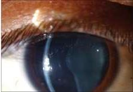

Cornea · Keratoconus (Conical cornea)
Symptoms and signs
Symptoms:
- Gradual and progressive painless diminution of vision due to:
- a) Myopia both axial and curvature.
- b) Irregular astigmatism.
- c) Opacities at the apex of the cornea.
Signs:
A. Early cases:
- Keratometry: increased power of curvature of the cornea later on, distortion of the mires of the keratometry occurs.
- Placido disc: irregular circles.
- Retinoscopy: a spinning red reflex.
B. Advanced cases:
- The central part of the cornea is thin and ectatic. It bulges forwards in the form of a cone, the apex of which is directed down and nasal.
- Angulation of the lower lid on looking down (Munson's sign).
- Fleischer's ring: a brown ring at the base of the cone due to hemosiderin deposition in the epithelial cells.
- Opacities at the apex of the cone due to:
- a) Ruptures of Descemet's membrane with aqueous influx and corneal edema.
- b) Ruptures in Bowman's membrane & filling the gaps fibrous tissue.
